you pick the place let's get breakfast
#BitsyJam
April 2017A short adventure game about breakfast.
tags:
software, games, bitsy

Ancient Secrets: Mall World AS Mall World
Ludum Dare 38
April 2017Journey through Mall World, purchase powerful artifacts, and maybe even solve the mystery of true love.
tags:
software, games, Unity

probably you can do this
Personal Project
April 2017A short adventure game about a night out.
tags:
software, games, bitsy

and meets some people along the way sarah goes to her friend's house
#paintjam
March 2017A short adventure game with artwork made exclusively in MS Paint.
tags:
software, games, PixiJS

Play the blues like a duck! Duck Duck Plays the Blues
Personal Project
March 2017A little PICO-8 music toy. Only one duck this time around, but now they've got a sax!
tags:
software, music, PICO-8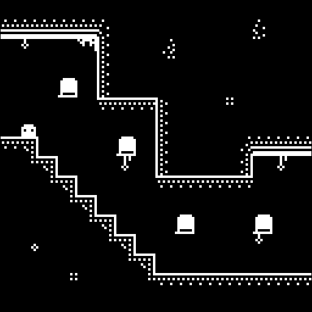 a bitsy utopia adventure holt
#utopiajam
February 2017A short adventure game made with Bitsy for Utopia Jam.
tags:
software, games, bitsy

audio not meant for listening Cover Your EP
#EPJam5
January 2017A generative audio EP made using a variety of different techniques.
tags:
software, music

PICO-8 in 140 characters or less Tweetcarts - 2016
#tweetjam
June - December 2016A set of 50 animations, each with source code short enough to fit in a tweet.
tags:
software, PICO-8an itch.io butler wrapper for lazybones like me gui-butler
Personal Project
December 2016A GUI wrapper for the butler CLI which provides access to some of the features not yet available in the official itch app or web interface.
tags:
software, tool

Bouncy Battles for 2-4 Buddies Bouncing Balls with the Boing Boing Boys
Ludum Dare 37
December 2016Chaotic local multiplayer deathmatch for 2-4 players. Made with Pixi.js.
tags:
software, games, PixiJS☰☱☳☷ STAIRS
Personal Project
December 2016A fantastic trilogy of PICO-8 falling hazards.
tags:
software, PICO-8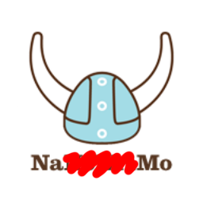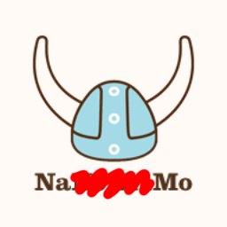 Some bots I made. NaBoMaMo2016
#NaBoMaMo
November 2016A set of six bots written during a 30-day bot-making challenge, primarily made with cheapbotsdonequick.com.
tags:
software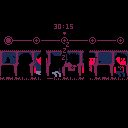 try to get some rest
don't miss your stopcommute
#YOUjam
November 2016A tiny autobiography made in PICO-8.
tags:
software, games, PICO-8

Fishing Free-For-All For 2-4 Players Tackle Tourney TURBO
#FishingJam 2
October 2016Local multiplayer game for 2-4 players with plenty of fake physics. Made with Pixi.js.
tags:
software, games, PixiJS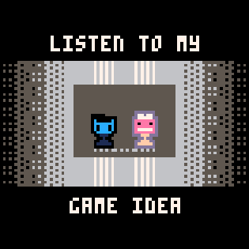 it's gonna be great listen to my game idea
#gameideajam
October 2016PICO-8 elevator pitches of the worst variety.
tags:
software, PICO-8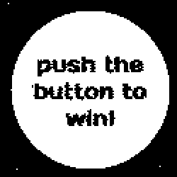 it's easy push the button to win!
#gameideajam
October 2016A push the button to win game. Made with Pixi.js.
tags:
software, games, PixiJS

Turn-based GameBoy Combat Rumble Road
#GBJAM 5
October 2016A short adventure inspired by JRPG classics. Made with Pixi.js.
tags:
software, games, PixiJS

Look, walk, and talk like a duck! Duck Duck on the Loose
Personal Project
September 2016A pseudo-3D open-world game made with PICO-8. It has ducks!
tags:
software, games, PICO-8

Relax and watch a probe search for life. In Transit
#fermijam
September 2016Not really a game, but relaxing to watch. Made with Pixi.js.
tags:
software, games, PixiJS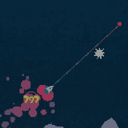 A game about picking up stars with a spaceship! STARSHIP
Carleton University
September 2016A simple game made in Processing. (originally a school project, updated for online release).
tags:
software, games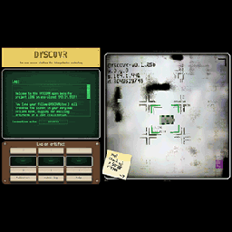 the open source platform for intergalactic archaeology DYSCOVR
Ludum Dare 36
August 2016An asynchronous online multiplayer sandbox about describing ancient alien technology. Made with Pixi.js.
tags:
software, games, PixiJS

A one button dueling game. One Button Duel
#OneButtonJam
August 2016This is a simple dueling game made with PICO-8. A basic peer-to-peer multiplayer mode is included through Peerjs.
tags:
software, games, PICO-8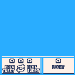 A PICO-8 Twitter Client P8T
Personal Project
July 2016A simple Twitter client made with PICO-8. This is a proof-of-concept meant to demonstrate netcode capabilities.
tags:
software, tool, PICO-8

Pretty PICO-8 Pages! PICO-8 Styler
Personal Project
July 2016A PHP tool for generating simple customized pages for PICO-8 games.
tags:
software, tool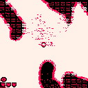 try to fight it atopy
Personal Project
June 2016A viscerally challenging and challengingly visceral stealth combat game.
tags:
software, games, PICO-8

Save your crew from the carbonated seas! Soda-Pop Sailin'
#simplejam
June 2016A zero-asset PICO-8 game. Everything including graphics and sound are generated through code.
tags:
software, games, PICO-8

A game about picking up stars! Star Picker-Upper
#p8jam2
May 2016A simple game made with PICO-8. Make sure to check out the cool palette swaps.
tags:
software, games, PICO-8

Can you keep your hotel afloat? Deluge Suites
#CITYSIMJAM
May 2016A cheery little isometric game about managing a business during the end of the world.
tags:
software, games, S-Tengine2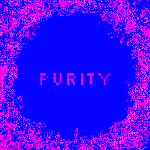 Protect your fragile heart from the infectious impurities! Purity
Ludum Dare 35
April 2016A reverse bullet-hell game with a hyper-agressive aesthetic and a steep difficulty curve. Even I can't get past level 10!
tags:
software, games, S-Tengine2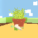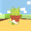 A little pot of paradise. SODZEN
#LOWREZJAM2016
April 2016A 64 by 64 pixel zen experiment created for a game jam. See other entries I worked on here.
tags:
software, games, S-Tengine2

You have to kill the sleeper agents. CODENAME: PAWN
Mini-Ludum Dare 66
March 2016A surveillance-themed RTS-lite. This is a game of patience and attention to detail.
tags:
software, games, S-Tengine2

A weird & abrasive sci-fi mystery adventure game. Party, Darling?
Carleton University
July 2015 - April 2016A procedurally generated adventure game. This is my team's senior project from Carleton.
tags:
software, games, S-Tengine2

A two-button game about growing up. Go On
Ludum Dare 34
December 2015Originally just a lighting experiment, this game was inspired by Passage and is awfully moody.
tags:
software, games, S-Tengine2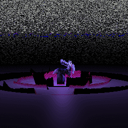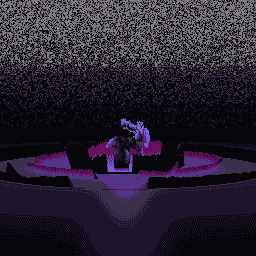 A WebGL audiovisual experience. StarBunny
Carleton University
October 2015Features the Stanford bunny and music by Retroman. Built with Three.js and the AudioContext API.
tags:
software, music, threejs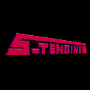 The best game engine ever made by people who don't know how to make game engines. S-Tengine 2
Carleton University
July 2014 - PresentAn open source OpenGL-based C++ game engine. Used to develop over a dozen indie freeware titles.
tags:
software, tool, S-Tengine2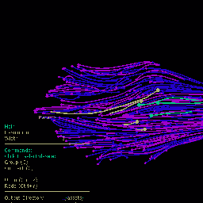 Hair modelling research. 3dSplineConnections
University of Ottawa
Fall 2014A Cinder-based 3D UI used to optimize data in a hair modelling pipeline.
tags:
software, tool, research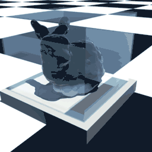 Smoothed Particle Hydrodynamics research. SPH
Carleton University
Summer 2013Contributions to SPH system included plastic deformation model, optimizations, and Maya visualization tools.
tags:
software, research